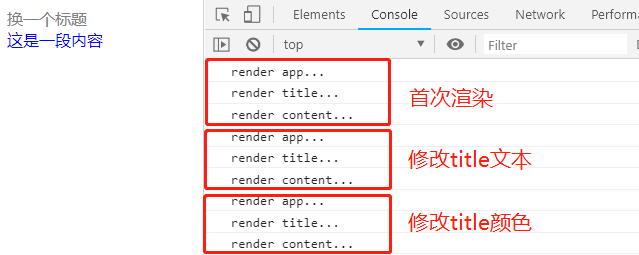
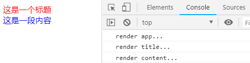
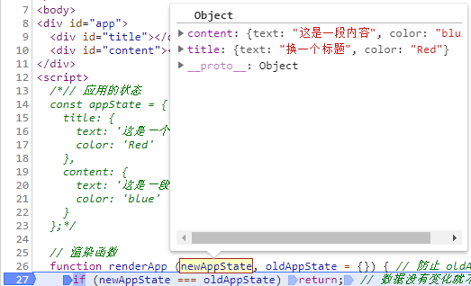
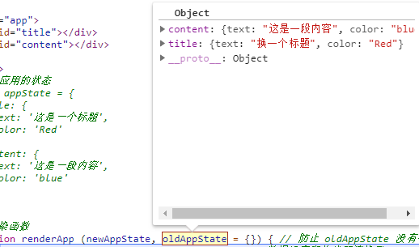
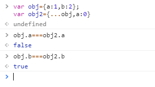
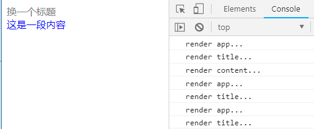
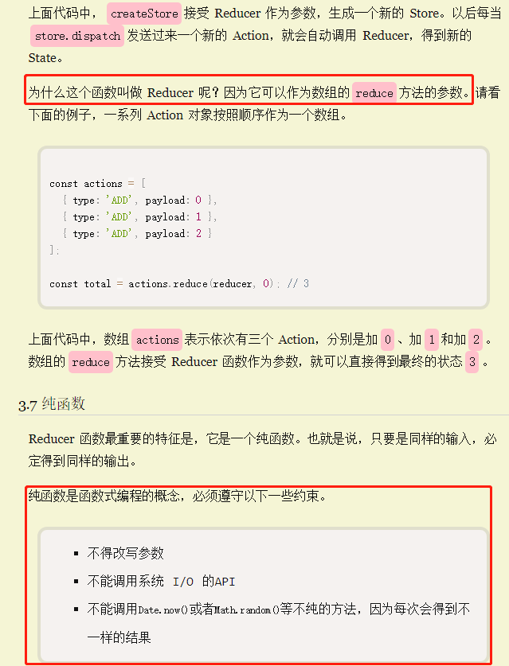
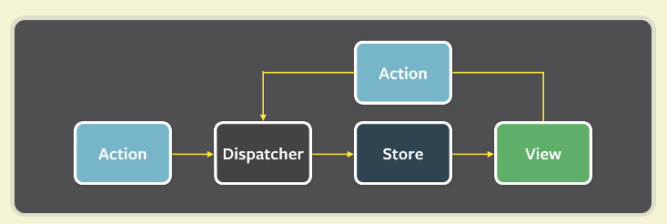

原文连接:https://www.cnblogs.com/peerless1029/p/10781391.html
前言
最近利用业余时间阅读了胡子大哈写的《React小书》，从基本的原理讲解了React，Redux等等受益颇丰。眼过千遍不如手写一遍，跟着作者的思路以及参考代码可以实现基本的Demo，下面根据自己的理解和参考一些资料，用原生JS从零开始实现一个Redux架构。
一.Redux基本概念
经常用React开发的朋友可能很熟悉Redux,React-Redux,这里告诉大家的是，Redux和React-Redux并不是一个东西，Redux是一种架构模式，2015年，Redux出现，将 Flux 与函数式编程结合一起，很短时间内就成为了最热门的前端架构。它不关心你使用什么库，可以把它和React,Vue或者JQuery结合。
二.由一个简单的例子开始
我们从一个简单的例子开始推演，新建一个html页面，代码如下：
<!DOCTYPE html>
<html lang="en">
<head>
<meta charset="UTF-8">
<title>Make-Redux</title>
</head>
<body>
<div id="app">
<div id="title"></div>
<div id="content"></div>
</div>
<script>
// 应用的状态
const appState = {
title: {
text: '这是一段标题',
color: 'Red'
},
content: {
text: '这是一段内容',
color: 'blue'
}
};
// 渲染函数
function renderApp(appState) {
renderTitle(appState.title);
renderContent(appState.content);
}
function renderTitle(title) {
const titleDOM = document.getElementById('title');
titleDOM.innerHTML = title.text;
titleDOM.style.color = title.color;
}
function renderContent(content) {
const contentDOM = document.getElementById('content');
contentDOM.innerHTML = content.text;
contentDOM.style.color = content.color;
}
// 渲染数据到页面上
renderApp(appState);
</script>
</body>
</html>HTML内容很简单，我们定义了一个appState数据对象，包括title和content属性，各自都有text和color，然后定义了renderApp,renderTitle，renderContent渲染方法，最后执行renderApp(appState)，打开页面：
这些写虽然没有什么问题，但是存在一个比较大的隐患，每个人都可以修改共享状态appState，在平时的业务开发中也很常见的一个问题是，定义了一个全局变量，其他同事在不知情的情况下可能会被覆盖修改删除掉，带来的问题是函数执行的结果往往是不可预料的，出现问题的时候调试起来非常困难。
那我们如何解决这个问题呢，我们可以提高修改共享数据的门槛，但是不能直接修改，只能修改我允许的某些修改。于是，定义一个dispatch方法，专门负责数据的修改。
function dispatch (action) {
switch (action.type) {
case 'UPDATE_TITLE_TEXT':
appState.title.text = action.text;
break;
case 'UPDATE_TITLE_COLOR':
appState.title.color = action.color;
break;
default:
break;
}
}这样我们规定，所有岁数据的操作必须通过dispatch方法。它接受一个对象暂且叫它action，规定只能修改title的文字与颜色。这样要想知道哪个函数修改了数据，我们直接在dispatch方法里面断点调试就可以了。大大的提高了解决问题的效率。
三.抽离store和实现监控数据变化
上面我们的appStore和dispatch分开的，为了使这种模式更加通用化，我们把他们集中一个地方构建一个函数createStore,用它来生产一个store对象，包含state和dispatch。
function createStore (state, stateChanger) {
const getState = () => state;
const dispatch = (action) => stateChanger(state, action);
return { getState, dispatch }
}我们修改之前的代码如下：
let appState = {
title: {
text: '这是一段标题',
color: 'red',
},
content: {
text: '这是一段内容',
color: 'blue'
}
}
function stateChanger (state, action) {
switch (action.type) {
case 'UPDATE_TITLE_TEXT':
state.title.text = action.text
break
case 'UPDATE_TITLE_COLOR':
state.title.color = action.color
break
default:
break
}
}
const store = createStore(appState, stateChanger)
// 首次渲染页面
renderApp(store.getState());
// 修改标题文本
store.dispatch({ type: 'UPDATE_TITLE_TEXT', text: '换一个标题' });
// 修改标题颜色
store.dispatch({ type: 'UPDATE_TITLE_COLOR', color: 'grey' });
// 再次把修改后的数据渲染到页面上
renderApp(store.getState());上面代码不难理解：我们用createStore生成了一个store，可以发现，第一个参数state就是我们之前声明的共享数据，第二个stateChanger方法就是之前声明的dispatch用于修改数据的方法。
然后我们调用了来两次store.dispatch方法，最后又重新调用了renderApp再重新获取新数据渲染了页面，如下：可以发现title的文字和标题都改变了。
那么问题来了，我们每次dispatch修改数据的时候，都要手动的调用renderApp方法才能使页面得以改变。我们可以把renderApp放到dispatch方法最后，这样的话，我们的createStore不够通用，因为其他的App不一定要执行renderApp方法，这里我们通过一种监听数据变化，然后再重新渲染页面，术语上讲叫做观察者模式。
我们修改createStore如下。
function createStore (state, stateChanger) {
const listeners = []; // 空的方法数组
// store调用一次subscribe就把传入的listener方法push到方法数组中
const subscribe = (listener) => listeners.push(listener);
const getState = () => state;
// 当store调用dispatch的改变数据的时候遍历listeners数组，执行其中每一个方法，到达监听数据重新渲染页面的效果
const dispatch = (action) => {
stateChanger(state, action);
listeners.forEach((listener) => listener())
};
return { getState, dispatch, subscribe }
}
再次修改上一部分的代码如下：
// 首次渲染页面
renderApp(store.getState());
// 监听数据变化重新渲染页面
store.subscribe(()=>{
renderApp(store.getState());
});
// 修改标题文本
store.dispatch({ type: 'UPDATE_TITLE_TEXT', text: '换一个标题' });
// 修改标题颜色
store.dispatch({ type: 'UPDATE_TITLE_COLOR', color: 'grey' });我们在首次渲染页面后只需要subscribe一次，后面dispatch修改数据，renderApp方法会被重新调用，实现了监听数据自动渲染数据的效果。
三.生成一个共享结构的对象来提高页面的性能
上一节我们每次调用renderApp方法的时候实际上是执行了renderTitle和renderContent方法，我们两次都是dispatch修改的是title数据，可是renderContent方法也都被一起执行了，这样执行了不必要的函数，有严重的性能问题，我们可以在几个渲染函数上加上一些Log看看实际上是不是这样的
function renderApp (appState) {
console.log('render app...')
...
}
function renderTitle (title) {
console.log('render title...')
...
}
function renderContent (content) {
console.log('render content...')
...
}浏览器控制台打印如下：

解决方案是：我们在每个渲染函数执行之前对其传入的数据进行一个判断，判断传入的新数据和旧数据是否相同，相同就return不渲染，否则就渲染。
// 渲染函数
function renderApp (newAppState, oldAppState = {}) { // 防止 oldAppState 没有传入，所以加了默认参数 oldAppState = {}
if (newAppState === oldAppState) return; // 数据没有变化就不渲染了
console.log('render app...');
renderTitle(newAppState.title, oldAppState.title);
renderContent(newAppState.content, oldAppState.content);
}
function renderTitle (newTitle, oldTitle = {}) {
if (newTitle === oldTitle) return; // 数据没有变化就不渲染了
console.log('render title...');
const titleDOM = document.getElementById('title');
titleDOM.innerHTML = newTitle.text;
titleDOM.style.color = newTitle.color;
}
function renderContent (newContent, oldContent = {}) {
if (newContent === oldContent) return; // 数据没有变化就不渲染了
console.log('render content...');
const contentDOM = document.getElementById('content')
contentDOM.innerHTML = newContent.text;
contentDOM.style.color = newContent.color;
}
...
let oldState = store.getState(); // 缓存旧的 state
store.subscribe(() => {
const newState = store.getState(); // 数据可能变化，获取新的 state
renderApp(newState, oldState); // 把新旧的 state 传进去渲染
oldState = newState // 渲染完以后，新的 newState 变成了旧的 oldState，等待下一次数据变化重新渲染
})
...以上代码我们在subscribe的时候先用oldState缓存旧的state，在dispatch之后执行里面的方法再次获取新的state然后oldState和newState传入到renderApp中，之后再用oldState保存newState。
好，我们打开浏览器看下效果：

控制台只打印了首次渲染的几行日志，后面两次dispatch数据之后渲染函数都没有执行。这说明oldState和newState相等了。


通过断点调试，发现newAppState和oldAppState是相等的。
究其原因，因为对象和数组是引用类型，newState,oldState指向同一个state对象地址，在每个渲染函数判断始终相等，就return了。
解决方法：appState和newState其实是两个不同的对象，我们利用ES6语法来浅复制appState对象，当执行dispatch方法的时候，用一个新对象覆盖原来title里面内容，其余的属性值保持不变。形成一个共享数据对象，可以参考以下一个demo:

我们修改stateChanger，让它修改数据的时候，并不会直接修改原来的数据 state，而是产生上述的共享结构的对象：
function stateChanger (state, action) {
switch (action.type) {
case 'UPDATE_TITLE_TEXT':
return { // 构建新的对象并且返回
...state,
title: {
...state.title,
text: action.text
}
}
case 'UPDATE_TITLE_COLOR':
return { // 构建新的对象并且返回
...state,
title: {
...state.title,
color: action.color
}
}
default:
return state // 没有修改，返回原来的对象
}
}因为stateChanger不会修改原来的对象了，而是返回一个对象，所以修改createStore里面的dispatch方法，执行stateChanger(state,action)的返回值来覆盖原来的state,这样在subscribe执行传入的方法在dispatch调用时，newState就是stateChanger()返回的结果。
function createStore (state, stateChanger) {
...
const dispatch = (action) => {
state=stateChanger(state, action);
listeners.forEach((listener) => listener())
};
return { getState, dispatch, subscribe }
}再次运行代码打开浏览器：

发现后两次store.dispatch导致的content重新渲染不存在了，优化了性能。
四.通用化Reducer
appState是可以合并到一起的
function stateChanger (state, action) {
if(state){
return {
title: {
text: '这是一个标题',
color: 'Red'
},
content: {
text: '这是一段内容',
color: 'blue'
}
}
}
switch (action.type) {
case 'UPDATE_TITLE_TEXT':
return { // 构建新的对象并且返回
...state,
title: {
...state.title,
text: action.text
}
}
case 'UPDATE_TITLE_COLOR':
return { // 构建新的对象并且返回
...state,
title: {
...state.title,
color: action.color
}
}
default:
return state // 没有修改，返回原来的对象
}
}再修改createStore方法：
function createStore (stateChanger) {
let state = null;
const listeners = []; // 空的方法数组
// store调用一次subscribe就把传入的listener方法push到方法数组中
const subscribe = (listener) => listeners.push(listener);
const getState = () => state;
// 当store调用dispatch的改变数据的时候遍历listeners数组，执行其中每一个方法，到达监听数据重新渲染页面的效果
const dispatch = (action) => {
state=stateChanger(state, action);
listeners.forEach((listener) => listener())
};
dispatch({}); //初始化state
return { getState, dispatch, subscribe }
}初始化一个局部变量state=null,最后手动调用一次dispatch({})来初始化数据。
stateChanger这个函数也可以叫通用的名字：reducer。为什么叫reducer? 参考阮一峰的《redux基本用法》里面对reducder的讲解;

五：Redux总结
以上是根据阅读《React.js小书》再次复盘，通过以上我们由一个简单的例子引入用原生JS能大概的从零到一完成了Redux，具体的使用步骤如下：
// 定一个 reducer
function reducer (state, action) {
/* 初始化 state 和 switch case */
}
// 生成 store
const store = createStore(reducer)
// 监听数据变化重新渲染页面
store.subscribe(() => renderApp(store.getState()))
// 首次渲染页面
renderApp(store.getState())
// 后面可以随意 dispatch 了，页面自动更新
store.dispatch(...)按照定义reducer->生成store->监听数据变化->dispatch页面自动更新。
下面两幅图也能很好表达出Redux的工作流程


使用Redux遵循的三大原则：
1.唯一的数据源store
2.保持状态的store只读，不能直接修改应用状态
3.应用状态的修改通过纯函数Reducer完成
当然不是每个项目都要使用Redux，一些小心共享数据较少的没必要使用Redux，视项目大小复杂度而定，具体什么时候使用？引用一句话：当你不确定是否使用Redux的时候，那就不要用Redux。
项目完整代码地址make-redux
六.写在最后
每一个工具或框架都是在一定的条件下为了解决某种问题产生的，在阅读几遍《React.js》小书之后，终于对React,Redux等一些基本原理有了一些了解，深感作为一个coder，不能只CV，记忆一些框架API会用就行，知其然不可，更要知其所以然，这样我们在完成项目才能更好的优化又能，是代码写的更加优雅。有什么错误的地方，敬请指正，技术想要有质的飞跃，就要多学习，多思考，多实践，与君共勉。
参考资料：
2.React进阶之路-徐超